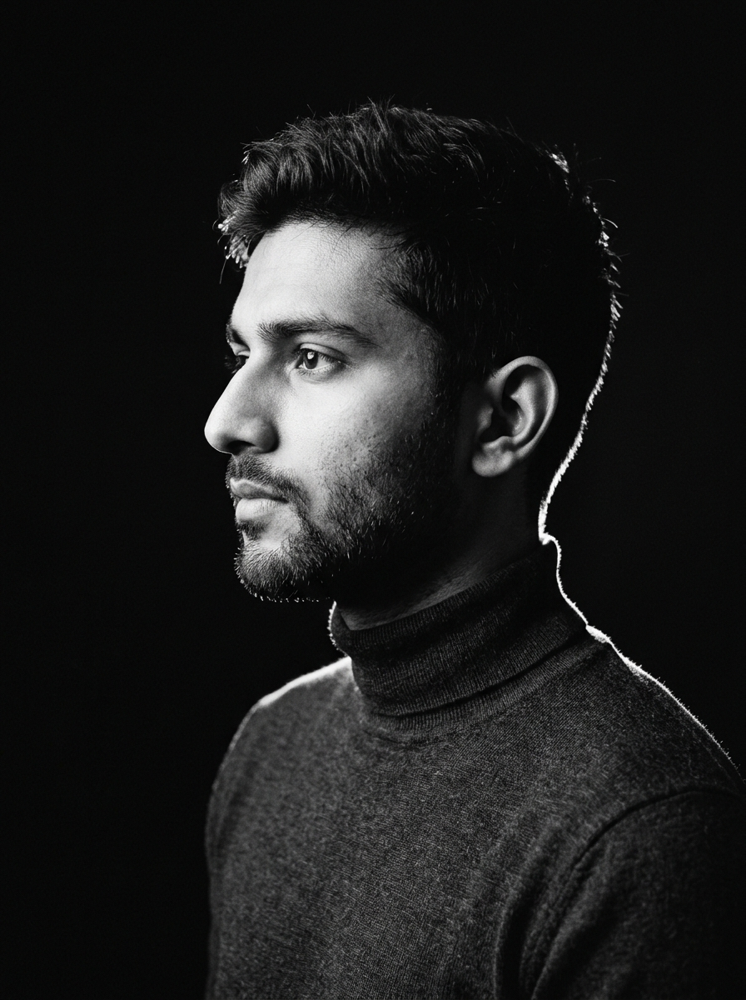

About
I'm Yahya Sameeh P P — a developer and cybersecurity enthusiast building modern web applications, exploring backend architectures, and studying secure systems.
I specialize in crafting digital experiences that feel considered from every angle — the layout, the type, the performance, and the defensive boundaries most users never have to think about. Consistency and architectural rigor matter to me, not as rigid rules, but because they make software resilient and trustworthy.
Alongside building web applications, I immerse myself in ethical security research, vulnerability discovery, and low-level computing primitives — driven by curiosity and an obsession with understanding how complex systems function from silicon to the browser.

Architecture & Craft Software shouldn't merely compile; it should feel lightweight, intentional, and robust across every viewport and network state.
Security-First Mindset Security is not a checkbox added before launch. It is built into the architecture: zero-trust principles, sanitized inputs, and hardened networks.
Foundational Depth True mastery comes from understanding low-level computing — memory pointers, raw protocols, and packet frames — before abstracting away complexity.